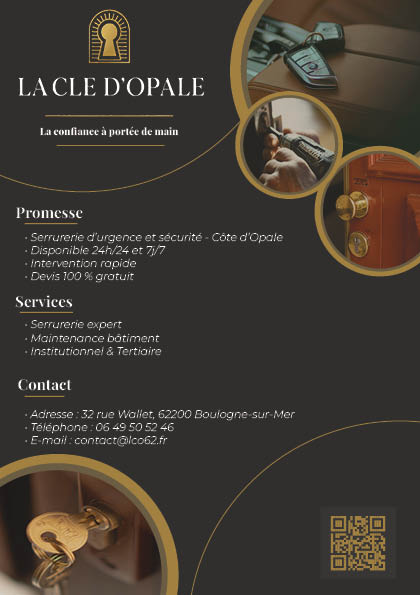
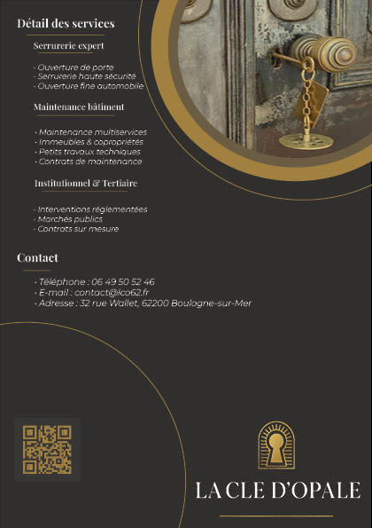
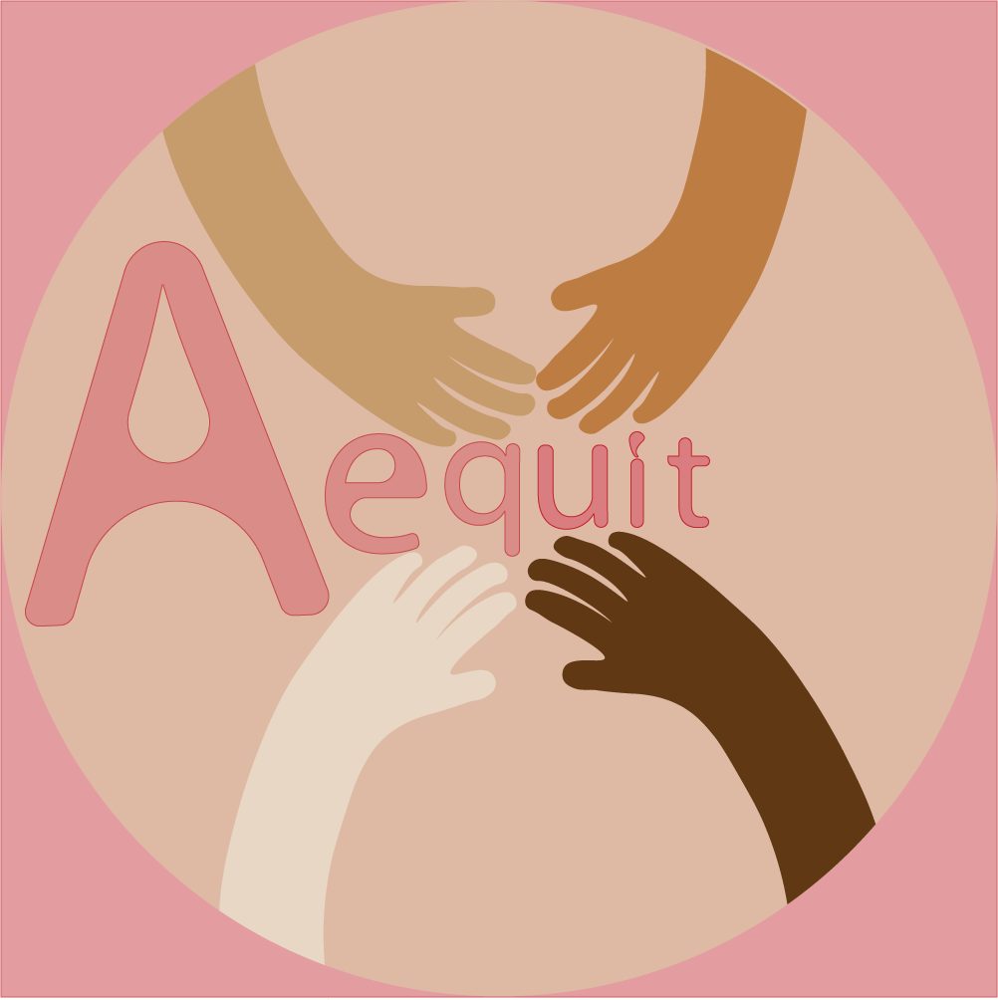
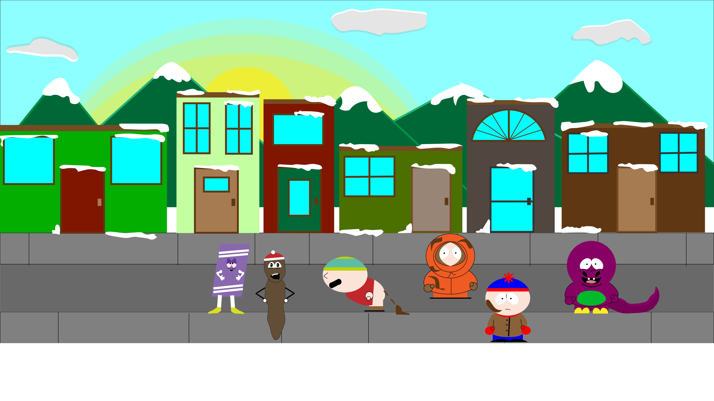
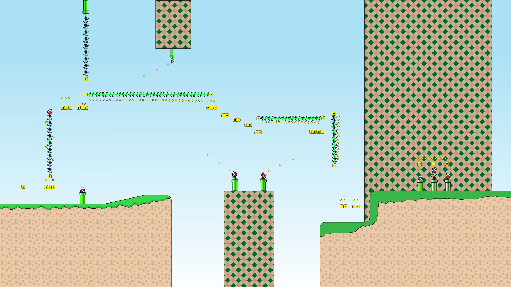

Projet 1 - Flyer commercial
Réalisation d'un flyer commercial. Ce travail a été réalisé dans le cadre du module consacré à l'utilisation du logiciel InDesign.
Terminé Agrandir l'image →Bienvenue dans mon espace projets. Vous trouverez ici les différentes réalisations effectuées dans le cadre de ma formation en DEUST Webmaster et Métiers de l'Internet.
Cliquez sur les images pour les découvrir en grand format.

Réalisation d'un flyer commercial. Ce travail a été réalisé dans le cadre du module consacré à l'utilisation du logiciel InDesign.
Terminé Agrandir l'image →
Présentation de l'autre face du flyer commercial, réalisée dans le cadre du module consacré à InDesign.
Terminé Agrandir l'image →
Réalisation d'un logo pour une association fictive dans le cadre du module Communication Numérique.
Terminé Agrandir l'image →
Réalisation d'un projet graphique autour de la série South Park avec le logiciel Illustrator, dans le cadre du module dédié.
Terminé Agrandir l'image →
Réalisation d'un projet autour du game design de la série de jeux vidéo Mario, avec le logiciel Illustrator. Ce projet est actuellement en cours.
En cours Agrandir l'image →Réalisation d'un portfolio autour de la conception d'un logo pour une association fictive. Ce travail a été réalisé dans le cadre du module Communication Numérique.
TerminéCe portfolio évoluera au fil de ma formation, de mes apprentissages et de mes expériences.